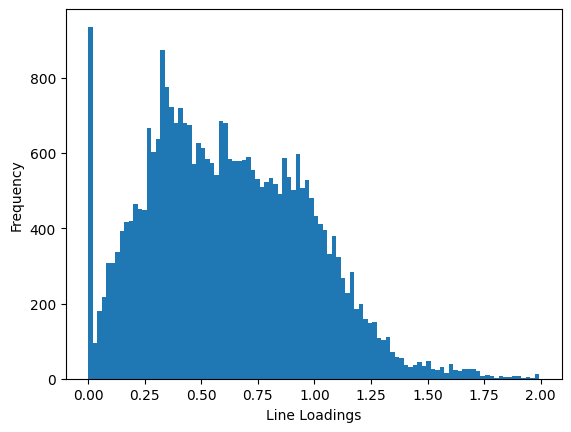
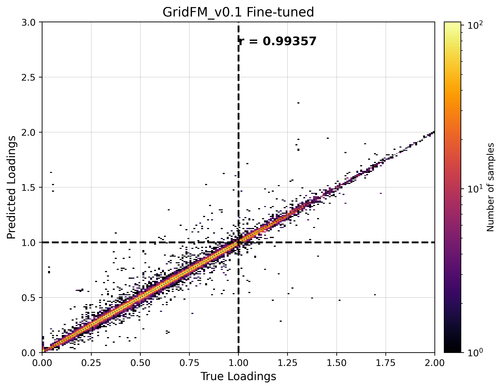
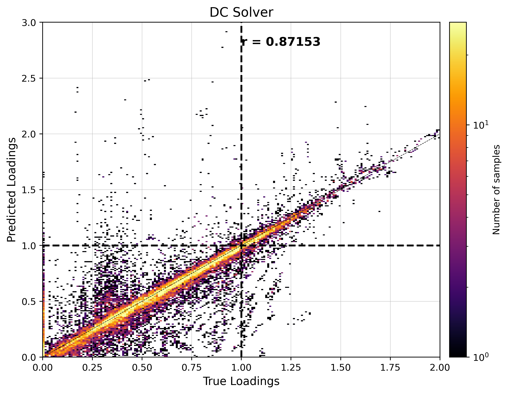
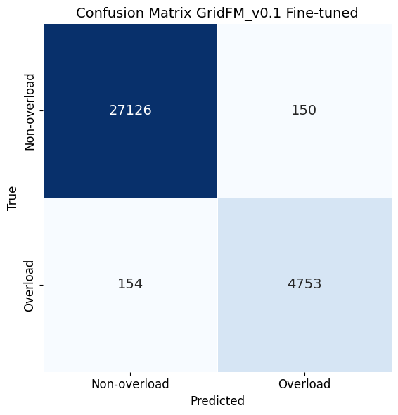
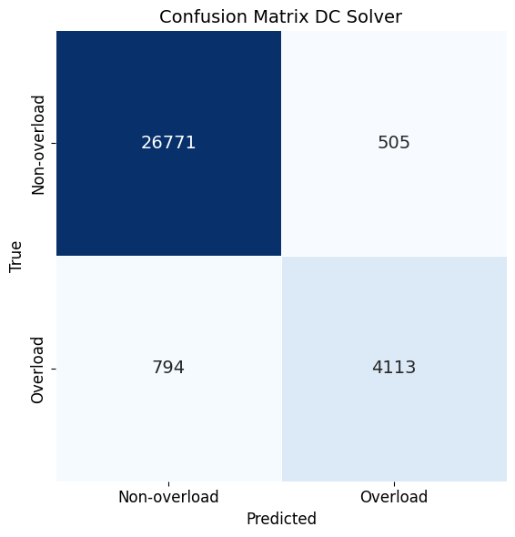
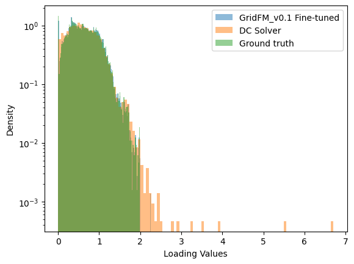
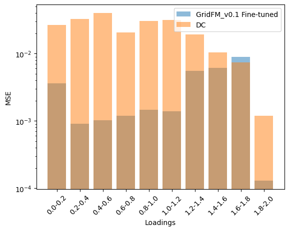
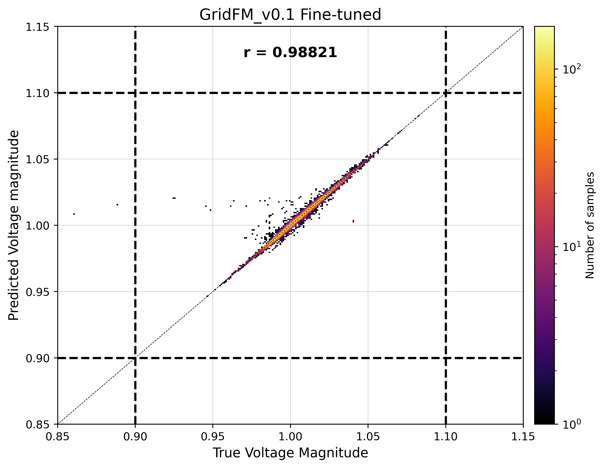

Contingency analysis
👉 Link to the tutorial notebooks on Github
Contingency analysis is a critical process in power system operations used to assess the impact of potential failures (e.g., line outages) on grid stability and reliability. It helps operators prepare for unexpected events by simulating scenarios such as N-1 or N-2 contingencies, where one or more components are removed from service. This analysis ensures that the grid can continue to operate within safe limits even under stressed conditions.
Dataset Generation and Model Evaluation¶
The dataset used in this study originates from the Texas transmission grid, which includes approximately 2,000 nodes. Using the contingency mode of the gridfm-datakit, we simulated N-2 contingencies by removing up to two transmission lines at a time. For each scenario, we first solved the optimal power flow (OPF) problem to determine the generation dispatch. Then, we applied the contingency by removing lines and re-solved the power flow to observe the resulting grid state.
This process generated around 100,000 unique scenarios. Our model, GridFMv0.1, was fine-tuned on this dataset to predict power flow outcomes. For demonstration purposes, we selected a subsample of 10 scenarios. The gridfm-datakit also computed DC power flow results, enabling a comparison between GridFMv0.1 predictions and traditional DC power flow estimates, specifically in terms of line loading accuracy.
All predictions are benchmarked against the ground truth obtained from AC power flow simulations. Additionally, we analyze bus voltage violations, which GridFM can predict but are not captured by the DC solver, highlighting GridFM’s enhanced capabilities in modeling grid behavior.
from gridfm_graphkit.datasets.postprocessing import (
compute_branch_currents_kA,
compute_loading,
)
from gridfm_graphkit.datasets.postprocessing import create_admittance_matrix
from gridfm_graphkit.utils.utils import compute_cm_metrics
from gridfm_graphkit.utils.visualization import (
plot_mass_correlation_density,
plot_cm,
plot_loading_predictions,
plot_mass_correlation_density_voltage,
)
import os
from tqdm import tqdm
import matplotlib.pyplot as plt
from sklearn.metrics import f1_score
import numpy as np
import pandas as pd
import sys
if "google.colab" in sys.modules:
try:
!git clone https://github.com/gridfm/gridfm-graphkit.git
%cd /content/gridfm-graphkit
!pip install -e .
!pip install -e .[dev,test]
except Exception as e:
print(f"Failed to start Google Collab setup, due to {e}")
Load Data¶
We load both the ground truth and predicted values of the power flow solution. The predictions are generated using the gridfm-graphkit CLI:
We then merge the datasets using scenario and bus as keys, allowing us to align the predicted and actual values for each grid state and bus.
root_pred_folder = "../data/contingency_texas/"
prediction_dir = "prediction_gridfm01"
label_plot = "GridFM_v0.1 Fine-tuned"
pf_node_GT = pd.read_csv(os.path.join(root_pred_folder, "pf_node_10_examples.csv"))
pg_node_predicted = pd.read_csv(
os.path.join(root_pred_folder, "predictions_10_examples.csv")
)
branch_idx_removed = pd.read_csv("{}branch_idx_removed.csv".format(root_pred_folder))
edge_params = pd.read_csv("{}edge_params.csv".format(root_pred_folder))
bus_params = pd.read_csv("{}bus_params.csv".format(root_pred_folder))
pf_node = pg_node_predicted.merge(pf_node_GT, on=["scenario", "bus"], how="left")
Create Admittance matrix¶
sn_mva = 100
Yf, Yt, Vf_base_kV, Vt_base_kV = create_admittance_matrix(
bus_params, edge_params, sn_mva
)
rate_a = edge_params["rate_a"]
Correct voltage predictions for GridFM and DC¶
pf_node["Vm_pred_corrected"] = pf_node["VM_pred"]
pf_node["Va_pred_corrected"] = pf_node["VA_pred"]
pf_node.loc[pf_node.PV == 1, "Vm_pred_corrected"] = pf_node.loc[pf_node.PV == 1, "Vm"]
pf_node.loc[pf_node.REF == 1, "Va_pred_corrected"] = pf_node.loc[pf_node.REF == 1, "Va"]
pf_node["Vm_dc_corrected"] = pf_node["Vm_dc"]
pf_node["Va_dc_corrected"] = pf_node["Va_dc"]
pf_node.loc[pf_node.PV == 1, "Vm_dc_corrected"] = pf_node.loc[pf_node.PV == 1, "Vm"]
pf_node.loc[pf_node.REF == 1, "Va_dc_corrected"] = pf_node.loc[pf_node.REF == 1, "Va"]
Compute branch current and line loading¶
loadings = []
loadings_pred = []
loadings_dc = []
for scenario_idx in tqdm(pf_node.scenario.unique()):
pf_node_scenario = pf_node[pf_node.scenario == scenario_idx]
branch_idx_removed_scenario = (
branch_idx_removed[branch_idx_removed.scenario == scenario_idx]
.iloc[:, 1:]
.values
)
# remove nan
branch_idx_removed_scenario = branch_idx_removed_scenario[
~np.isnan(branch_idx_removed_scenario)
].astype(np.int32)
V_true = pf_node_scenario["Vm"].values * np.exp(
1j * pf_node_scenario["Va"].values * np.pi / 180
)
V_pred = pf_node_scenario["Vm_pred_corrected"].values * np.exp(
1j * pf_node_scenario["Va_pred_corrected"].values * np.pi / 180
)
V_dc = pf_node_scenario["Vm_dc_corrected"].values * np.exp(
1j * pf_node_scenario["Va_dc_corrected"].values * np.pi / 180
)
If_true, It_true = compute_branch_currents_kA(
Yf, Yt, V_true, Vf_base_kV, Vt_base_kV, sn_mva
)
If_pred, It_pred = compute_branch_currents_kA(
Yf, Yt, V_pred, Vf_base_kV, Vt_base_kV, sn_mva
)
If_dc, It_dc = compute_branch_currents_kA(
Yf, Yt, V_dc, Vf_base_kV, Vt_base_kV, sn_mva
)
loading_true = compute_loading(If_true, It_true, Vf_base_kV, Vt_base_kV, rate_a)
loading_pred = compute_loading(If_pred, It_pred, Vf_base_kV, Vt_base_kV, rate_a)
loading_dc = compute_loading(If_dc, It_dc, Vf_base_kV, Vt_base_kV, rate_a)
# remove the branches that are removed from loading
loading_true[branch_idx_removed_scenario] = -1
loading_pred[branch_idx_removed_scenario] = -1
loading_dc[branch_idx_removed_scenario] = -1
loadings.append(loading_true)
loadings_pred.append(loading_pred)
loadings_dc.append(loading_dc)
loadings = np.array(loadings)
loadings_pred = np.array(loadings_pred)
loadings_dc = np.array(loadings_dc)
removed_lines = loadings == -1
removed_lines_pred = loadings_pred == -1
removed_lines_dc = loadings_dc == -1
# assert the same lines are removed
assert (removed_lines == removed_lines_pred).all()
assert (removed_lines == removed_lines_dc).all()
# assert the same number of lines are removed
assert removed_lines.sum() == removed_lines_pred.sum()
assert removed_lines.sum() == removed_lines_dc.sum()
overloadings = loadings[removed_lines == False] > 1.0
overloadings_pred = loadings_pred[removed_lines == False] > 1.0
overloadings_dc = loadings_dc[removed_lines == False] > 1.0
Histogram of true line loadings¶
plt.hist(loadings[removed_lines == False], bins=100)
plt.xlabel("Line Loadings")
plt.ylabel("Frequency")
# log scale
plt.savefig(f"loadings_histogram_{prediction_dir}.png")
plt.show()

Predicted vs True line loading¶
# Valid lines
valid_mask = removed_lines == False
# Extract valid values
true_vals = loadings[valid_mask]
gfm_vals = loadings_pred[valid_mask]
dc_vals = loadings_dc[valid_mask]




# Histograms of loadings
plot_loading_predictions(
loadings_pred[removed_lines == False],
loadings_dc[removed_lines == False],
loadings[removed_lines == False],
prediction_dir,
label_plot,
)

# create df from loadings
loadings_df = pd.DataFrame(loadings)
loadings_df.columns = [f"branch_{i}" for i in range(loadings_df.shape[1])]
loadings_pred_df = pd.DataFrame(loadings_pred)
loadings_pred_df.columns = [f"branch_{i}" for i in range(loadings_pred_df.shape[1])]
loadings_df["scenario"] = pf_node["scenario"].unique()
loadings_pred_df["scenario"] = pf_node["scenario"].unique()
# make bar plot of wrongly classified loadings for different bins
bins = np.arange(0, 2.2, 0.2)
mse_pred = []
mse_dc = []
for i in range(len(bins) - 1):
idx_in_bins = (loadings[removed_lines == False] > bins[i]) & (
loadings[removed_lines == False] < bins[i + 1]
)
mse_pred.append(
np.mean(
(
loadings_pred[removed_lines == False][idx_in_bins]
- loadings[removed_lines == False][idx_in_bins]
)
** 2
)
)
mse_dc.append(
np.mean(
(
loadings_dc[removed_lines == False][idx_in_bins]
- loadings[removed_lines == False][idx_in_bins]
)
** 2
)
)
# labels
labels = [f"{bins[i]:.1f}-{bins[i + 1]:.1f}" for i in range(len(bins) - 1)]
plt.bar(labels, mse_pred, label=label_plot, alpha=0.5)
plt.bar(labels, mse_dc, label="DC", alpha=0.5)
plt.legend()
plt.xlabel("Loadings")
plt.ylabel("MSE")
# y log scale
plt.yscale("log")
# rotate x labels
plt.xticks(rotation=45)
plt.savefig(f"loading_mse_{prediction_dir}.png")
plt.show()

Voltage violations¶
# merge bus_params["vmax"] and bus_params["vmin"] with pf_node on bus_idx
pf_node = pd.merge(pf_node, bus_params[["bus", "vmax", "vmin"]], on="bus", how="left")
plot_mass_correlation_density_voltage(pf_node, prediction_dir, label_plot)
